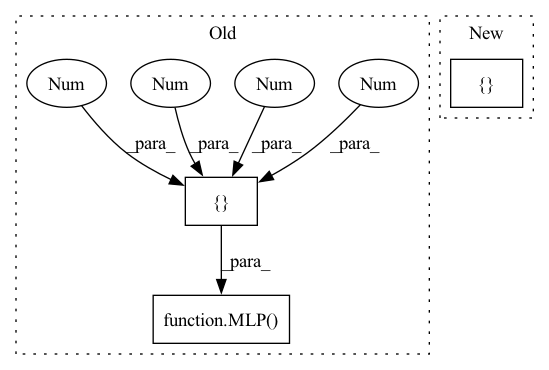

Pattern ID :28109

Before Change
// self.sa3_module = _SetAbstractionModule(0.25, self.config["r3"], _MLP([128 + 3, 128, 128, 128]))
// self.sa4_module = _SetAbstractionModule(0.25, self.config["r4"], _MLP([128 + 3, 128, 128, 256]))
// self.sa_last_module = _GlobalSetAbstractionModule(_MLP([256 + 3, 256, 512, 1024]))
self.sa_last_module = _GlobalSetAbstractionModule(MLP([3, 256, 512, 1024]))
self.lin = nn.Linear(1024, out_size)
After Change
self.config = {"r1": 0.3, "r2": 0.4, "r3": 5, "r4": 7} // defaults for this net
self.config.update(config) // from input
self.sa1_module = _SetAbstractionModule(0.2, self.config["r1"], MLP([3, self.config["EConv_hidden"], self.config["EConv_hidden"], self.config["EConv_feature"]]))
// self.sa2_module = _SetAbstractionModule(0.25, self.config["r2"], MLP([112 + 3, 200, 200, 112]))
// self.sa3_module = _SetAbstractionModule(0.25, self.config["r3"], MLP([128 + 3, 128, 128, 128]))
// self.sa4_module = _SetAbstractionModule(0.25, self.config["r4"], MLP([128 + 3, 128, 128, 256]))
In pattern: SUPERPATTERN
Frequency: 3
Non-data size: 3
Instances
Fragment ID: 83057907
Project Name: maria-korosteleva/garment-pattern-estimation
Commit Name: f968893c30485d64366c85055b379f24bacd8618
Time: 2021-01-20
Author: mariako@kaist.ac.kr
File Name: nn/net_blocks.py
M Class Name: PointNetPlusPlus
N Class Name: PointNetPlusPlus
M Method Name: __init__(3)
N Method Name: __init__(3)
M Parent Class: nn.Module
N Parent Class: nn.Module
M File Name: nn/net_blocks.py
N File Name: nn/net_blocks.py
M Start Line: 68
M End Line: 70
N Start Line: 60
N End Line: 70
'>
Before Change
self.config.update({"r1": 10, "r2": 40}) // defaults for this net
self.config.update(config) // from input
self.sa1_module = SetAbstractionModule(0.5, self.config["r1"], MLP([3, 64, 64, 128]))
self.sa2_module = SetAbstractionModule(0.25, self.config["r2"], MLP([128 + 3, 128, 128, 256]))
self.sa3_module = GlobalSetAbstractionModule(MLP([256 + 3, 256, 512, 1024]))
After Change
self.loop_loss = metrics.PanelLoopLoss(data_stats=data_norm)
// Feature extractor definition
self.feature_extractor = PointNetPlusPlus(self.config["pattern_encoding_size"], {"r1": self.config["r1"], "r2": self.config["r2"]})
// Decode into pattern definition
self.panel_decoder = LSTMDecoderModule(
'>
Fragment ID: 83057910
Project Name: maria-korosteleva/garment-pattern-estimation
Commit Name: 4577fb3688fde38f2799eb4caa4c2068a667358e
Time: 2020-08-06
Author: mariako@kaist.ac.kr
File Name: nn/nets.py
M Class Name: GarmentPattern3DPoint
N Class Name: GarmentPattern3DPoint
M Method Name: __init__(6)
N Method Name: __init__(6)
M Parent Class: BaseModule
N Parent Class: BaseModule
M File Name: nn/nets.py
N File Name: nn/nets.py
M Start Line: 418
M End Line: 427
N Start Line: 439
N End Line: 439
'>
Before Change
self.config.update({"r1": 10, "r2": 40}) // defaults for this net
self.config.update(config) // from input
self.sa1_module = SetAbstractionModule(0.5, config["r1"], MLP([3, 64, 64, 128]))
self.sa2_module = SetAbstractionModule(0.25, config["r2"], MLP([128 + 3, 128, 128, 256]))
self.sa3_module = GlobalSetAbstractionModule(MLP([256 + 3, 256, 512, 1024]))
After Change
self.config.update({"r1": 10, "r2": 40}) // defaults for this net
self.config.update(config) // from input
self.feature_extractor = PointNetPlusPlus(512, {"r1": self.config["r1"], "r2": self.config["r2"]})
self.lin2 = nn.Linear(512, 256)
self.lin3 = nn.Linear(256, out_size)
'>
Fragment ID: 83057883
Project Name: maria-korosteleva/garment-pattern-estimation
Commit Name: 4577fb3688fde38f2799eb4caa4c2068a667358e
Time: 2020-08-06
Author: mariako@kaist.ac.kr
File Name: nn/nets.py
M Class Name: GarmentParamsPoint
N Class Name: GarmentParamsPoint
M Method Name: __init__(3)
N Method Name: __init__(3)
M Parent Class: BaseModule
N Parent Class: BaseModule
M File Name: nn/nets.py
N File Name: nn/nets.py
M Start Line: 119
M End Line: 123
N Start Line: 226
N End Line: 226